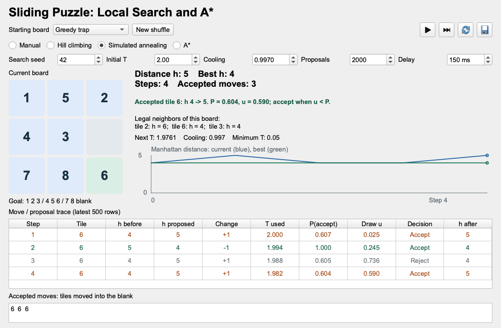

Sliding Puzzle: Local Search and A*
Compare hill climbing, simulated annealing, and A* on exactly the same 3-by-3 sliding puzzle. Manual play is also available. The objective is to reach the ordered board through legal tile moves, not just produce the goal arrangement.
Run the Demo
Use Python 3.10 or newer. Install PySide6, the Qt library that supplies the graphical user interface (GUI), then run the downloaded file:
The application starts with Greedy trap and Hill climbing selected. Use the play button to run, the next-step button to inspect one step, and the reset arrow to return to the same starting board. Selecting a different algorithm also resets to that same board. Changing the search seed or annealing parameters restarts the run; changing the delay only changes playback speed.
New shuffle creates a different solvable puzzle by legal moves. Reset never changes the puzzle. The save button exports the full run, including all proposals and accepted board states, as JSON. The on-screen trace keeps the latest 500 rows.

Same Board, Different Methods
The default starting board and the goal are:
Here h=4. Moving tile 6 or tile 8 into the blank gives h=5: both legal moves initially make the distance worse.
| Method | Decision rule | What to expect |
|---|---|---|
| Hill climbing | Choose the lowest-distance neighbor, but move only if it improves h. | Stops at this non-goal local minimum. |
| Simulated annealing | Propose a random legal move; sometimes accept a larger h. | May escape, revisit boards, or exhaust its budget. |
| A* | Expand a frontier state with smallest f=g+h. | Finds a shortest solution for a solvable 8-puzzle. |
A* is not local search. Here g is the number of moves from the start, and h estimates the number still required. A* retains alternative states and parent links. Local search follows one current state; this demo additionally records its history for inspection.
A Reproducible Run
With search seed 42, initial temperature 2.0, cooling factor 0.997, and a budget of 2,000 proposals, the provided implementation gives:
| Method | Result | Accepted moves | Final h |
|---|---|---|---|
| Hill climbing | Stuck immediately | 0 | 4 |
| Simulated annealing | Solved after 40 proposals | 32 | 0 |
| A* | Solved; 8 states expanded, including the goal | 6 | 0 |
These are results for this specific board, seed, and implementation, not a general performance ranking. Seed 7 with the same annealing settings exhausts the budget without solving the puzzle. Failure to solve is different from the board being unsolvable.
The six tile moves returned by A* are:
The beginning of the annealing trace shows both accepting and rejecting an uphill move. Each tile number identifies the tile proposed to move into the blank.
| Proposal | Tile | \Delta h | T | P(\text{accept}) | Draw u | Decision |
|---|---|---|---|---|---|---|
| 1 | 6 | +1 | 2.000 | 0.607 | 0.025 | Accept |
| 2 | 6 | -1 | 1.994 | 1.000 | 0.245 | Accept |
| 3 | 6 | +1 | 1.988 | 0.605 | 0.736 | Reject |
| 4 | 6 | +1 | 1.982 | 0.604 | 0.590 | Accept |
The third proposal leaves the board unchanged. It still counts as a proposal and still cools the temperature. The second move undoes the first: revisiting a board is allowed in the local-search demonstration.
State and Legal Moves
The code blocks below are taken directly from the downloadable file. Their line numbers match that file. The full program is self-contained; the GUI sections are folded near the bottom.
Board Representation
A tuple stores the nine cells in row-major order. Zero is the blank. Immutable tuples can be dictionary keys for A*.
For this 3-by-3 puzzle, count inversions among numbered tiles: a pair is inverted when a larger number precedes a smaller one. A board can reach this goal exactly when that count is even. This formula is specific to odd-width boards; do not reuse it unchanged for a 4-by-4 puzzle.
GOAL = (1, 2, 3, 4, 5, 6, 7, 8, 0)
TRAP = (1, 5, 2, 4, 3, 6, 7, 8, 0)
EASY = (1, 2, 3, 4, 5, 6, 0, 7, 8)
MODES = ("Manual", "Hill climbing", "Simulated annealing", "A*")
def validate(state):
if len(state) != 9 or set(state) != set(range(9)):
raise ValueError("Use each number 0 through 8 exactly once.")
def is_solvable(state):
tiles = [tile for tile in state if tile]
inversions = sum(a > b for i, a in enumerate(tiles) for b in tiles[i + 1:])
return inversions % 2 == 0 # This parity rule is for a 3-by-3 board.The Neighborhood
Each neighbor swaps the blank with one tile directly above, below, left, or right. Diagonal moves and arbitrary tile swaps are not allowed. The helper returns both the moved tile and the resulting board.
def neighbors(state):
blank = state.index(0)
row, col = divmod(blank, 3)
for dr, dc in ((-1, 0), (1, 0), (0, -1), (0, 1)):
nr, nc = row + dr, col + dc
if 0 <= nr < 3 and 0 <= nc < 3:
index = 3 * nr + nc
board = list(state)
tile = board[index]
board[blank], board[index] = board[index], board[blank]
yield tile, tuple(board)Manhattan Distance
For each numbered tile, add its horizontal and vertical distance from its goal cell:
h(s)=\sum_{t=1}^{8} \left( |r_t-r_t^{\text{goal}}| + |c_t-c_t^{\text{goal}}| \right).
The blank is excluded. One legal move changes this total by exactly +1 or -1, so this particular neighborhood has no equal-h moves. Manhattan distance never overestimates the required moves: each move shifts only one numbered tile by one cell.
A Solvable Shuffle
Start from the goal and make legal moves. Avoid immediately undoing the preceding move during shuffling. The number of shuffle moves is not the shortest solution length. During search, all legal moves remain available, including undo moves.
def shuffled_board(rng, moves=40):
state, previous = GOAL, None
for _ in range(moves):
# Avoid immediate undo only while shuffling, not during search.
options = [(tile, board) for tile, board in neighbors(state)
if board != previous]
previous, state = state, rng.choice(options)[1]
if state == GOAL:
state = next(neighbors(state))[1]
return stateLocal Search
Run State
Each run gets its own seeded random-number generator. Resetting reproduces its choices without changing the initial puzzle. The current board and best-so-far record are separate; storing a best board does not teleport the current board to it.
class SearchRun:
def __init__(self, initial, mode="Hill climbing", seed=42,
temperature=2.0, cooling=0.997, budget=2000):
initial = tuple(initial)
validate(initial)
if mode not in MODES:
raise ValueError("Unknown search mode.")
if temperature <= 0 or not 0 < cooling <= 1 or budget < 1:
raise ValueError("Use positive temperature/budget and 0 < cooling <= 1.")
self.initial = self.state = initial
self.mode, self.seed = mode, seed
self.rng = random.Random(seed)
self.start_temperature = self.temperature = temperature
self.cooling, self.budget = cooling, budget
self.records = []
self.path = [initial]
self.moved_tiles = []
self.costs = [manhattan(initial)]
self.best_costs = self.costs.copy()
self.best_path = self.path.copy()
self.planner = AStar(initial) if mode == "A*" else None
self.status = "ready"
if not is_solvable(initial):
self.status = "unsolvable"
elif initial == GOAL:
self.status = "solved"
@property
def finished(self):
return self.status in {"solved", "stuck", "budget", "unsolvable"}Hill Climbing and Annealing
Hill climbing evaluates every legal neighbor and selects a minimum-h neighbor, breaking ties randomly. If no neighbor improves the current distance, it stops.
Annealing instead selects one random legal neighbor. With \Delta h=h(s')-h(s):
P(\text{accept})= \begin{cases} 1, & \Delta h\leq 0,\\ \exp(-\Delta h/T), & \Delta h>0. \end{cases}
Draw u uniformly from [0,1) and accept when u<P(\text{accept}). After each proposal, use T\leftarrow\max(0.05,\alpha T), where \alpha is the cooling factor. The positive temperature floor and finite proposal budget are practical demonstration choices, not a convergence guarantee.
def advance(self, tile=None):
if self.finished:
return None
if self.mode == "A*":
return self.advance_astar()
options = list(neighbors(self.state))
if self.mode == "Manual":
choice = next((move for move in options if move[0] == tile), None)
return self.record(*choice) if choice else None
if self.mode == "Hill climbing":
best = min(manhattan(board) for _, board in options)
if best >= manhattan(self.state):
self.status = "stuck"
return None
tile, candidate = self.rng.choice([
move for move in options if manhattan(move[1]) == best
])
return self.record(tile, candidate)
if len(self.records) >= self.budget:
self.status = "budget"
return None
tile, candidate = self.rng.choice(options)
delta = manhattan(candidate) - manhattan(self.state)
probability = 1.0 if delta <= 0 else math.exp(-delta / self.temperature)
proposal = self.record(
tile, candidate, probability, self.rng.random(), self.temperature,
)
# Cool after every proposal, including a rejected proposal.
self.temperature = max(0.05, self.temperature * self.cooling)
if not self.finished and len(self.records) == self.budget:
self.status = "budget"
return proposalRecording a Proposal
A proposal contains the before, proposed, and resulting boards. Rejections appear in the trace but not in the accepted move sequence.
The recorder updates the current board only on acceptance. It also keeps the best distance and a legal path from the original board to that best state. Only reaching h=0 counts as solving the puzzle; a low best-so-far distance is not enough.
def record(self, tile, candidate, probability=1.0, draw=None, temperature=None):
before = self.state
h_before, h_candidate = manhattan(before), manhattan(candidate)
accepted = draw is None or draw < probability
if accepted:
self.state = candidate
self.path.append(candidate)
self.moved_tiles.append(tile)
proposal = Proposal(
len(self.records) + 1, tile, before, candidate, self.state,
h_before, h_candidate, h_candidate - h_before,
temperature, probability, draw, accepted,
)
self.records.append(proposal)
cost = manhattan(self.state)
if cost < self.best_costs[-1]:
self.best_path = self.path.copy()
self.costs.append(cost)
self.best_costs.append(min(self.best_costs[-1], cost))
if self.state == GOAL:
self.status = "solved"
return proposalA Dependable Comparison: A*
A* uses a priority queue ordered by g+h. Every tile slide has cost one. A dictionary remembers the smallest known g for each board, and parent links reconstruct the solution.
If a better route is found, push a fresh queue entry. When an old entry is later popped, discard it if its saved g differs from the dictionary’s best value. This is the same stale-entry technique used in the uniform-cost search demo.
Manhattan distance is admissible and consistent here. With the goal test when a state is removed from the priority queue, this graph-search implementation finds a shortest solution for any solvable 8-puzzle. It can use much more memory than the local methods.
class AStar:
"""Incremental graph search; each advance expands at most one state."""
def __init__(self, initial):
validate(initial)
self.serial = count()
self.frontier = [(manhattan(initial), 0, next(self.serial), initial)]
self.best_g = {initial: 0}
self.parent = {initial: None}
self.expanded = 0
self.route = None
self.done = not is_solvable(initial)
def advance(self):
if self.done:
return
while self.frontier:
_, g, _, state = heapq.heappop(self.frontier)
if g != self.best_g[state]:
continue # An improved route superseded this heap entry.
self.expanded += 1
if state == GOAL:
route = []
while state is not None:
route.append(state)
state = self.parent[state]
self.route = route[::-1]
self.done = True
return
for _, candidate in neighbors(state):
new_g = g + 1
if new_g < self.best_g.get(candidate, math.inf):
self.best_g[candidate] = new_g
self.parent[candidate] = state
heapq.heappush(self.frontier, (
new_g + manhattan(candidate), new_g,
next(self.serial), candidate,
))
return
self.done = TrueSearch Order Is Not a Move Sequence
A* may expand states on different branches. Jumping between those states would not be legal puzzle playback.
The GUI therefore leaves the board at the start while planning, then animates only the recovered route. One-step mode performs one expansion while planning and one tile move during playback. Automatic mode batches up to 100 expansions per timer tick to keep planning responsive.
def advance_astar(self):
if not self.planner.done:
self.status = "planning"
self.planner.advance()
if self.planner.done:
self.status = "replay" if self.planner.route else "unsolvable"
return None
# Expansion order is not a legal route: replay only the recovered path.
candidate = self.planner.route[len(self.path)]
tile = candidate[self.state.index(0)]
return self.record(tile, candidate)Questions and Answers
- Why is the default board a local minimum even though it is solvable?
- Why does a rejected annealing proposal count as a step but not a move?
- Why must a retry reset to the same starting board?
- Why can A* solve this board even though its first solution move increases h?
- Does a lower best-so-far distance guarantee that annealing will solve the puzzle?
Answers
- The current distance is 4, and both legal neighbors have distance 5. Strict hill climbing cannot leave it, but a legal six-move route reaches the goal.
- The algorithm still sampled and evaluated a candidate. The rejection leaves the current board unchanged, so no tile moves, but the proposal budget and cooling schedule advance.
- A different board is a different problem. Resetting the same board while changing the seed produces another stochastic attempt at the original task.
- A* does not require each move to lower h. It maintains a frontier of alternatives and ranks total estimated path cost g+h.
- No. Annealing may remain trapped after cooling, revisit states, or run out of proposals. A best-so-far record is useful evidence of progress, not a success guarantee.
GUI Implementation
The remaining sections draw the interface, schedule animation, and export results. They do not change the algorithms above.
Imports
Imports
import heapq
import json
import math
import random
import sys
from dataclasses import asdict, dataclass
from itertools import count
from PySide6.QtCore import QPointF, Qt, QTimer
from PySide6.QtGui import QColor, QFont, QPainter, QPen, QPolygonF
from PySide6.QtWidgets import (
QApplication, QComboBox, QDoubleSpinBox, QFileDialog, QGridLayout,
QHBoxLayout, QHeaderView, QLabel, QMainWindow, QMessageBox,
QPlainTextEdit, QPushButton, QRadioButton, QSpinBox, QStyle,
QTableWidget, QTableWidgetItem, QToolButton, QVBoxLayout, QWidget,
)Distance Plot
Current and best distance plot
class CostChart(QWidget):
def __init__(self):
super().__init__()
self.current, self.best = [0], [0]
self.setMinimumHeight(120)
def paintEvent(self, event):
painter = QPainter(self)
painter.setRenderHint(QPainter.RenderHint.Antialiasing)
left, top, right, bottom = 38, 25, self.width() - 12, self.height() - 27
maximum = max(2, max(self.current))
painter.setPen(QColor("#58636b"))
painter.drawText(left, 16, "Manhattan distance: current (blue), best (green)")
painter.drawLine(left, bottom, right, bottom)
painter.drawLine(left, top, left, bottom)
painter.drawText(8, top + 5, str(maximum))
painter.drawText(20, bottom + 4, "0")
painter.drawText(left, self.height() - 5, "0")
painter.drawText(right - 135, self.height() - 5,
f"Step {len(self.current) - 1}")
for values, color in ((self.current, "#2463a5"), (self.best, "#18764d")):
points = QPolygonF([
QPointF(left + i / max(1, len(values) - 1) * (right - left),
bottom - value / maximum * (bottom - top))
for i, value in enumerate(values)
])
painter.setPen(QPen(QColor(color), 2))
painter.drawPolyline(points)
painter.drawEllipse(points[-1], 3, 3)Window and Controls
Build the GUI
class SlidingPuzzle(QMainWindow):
def __init__(self):
super().__init__()
self.setWindowTitle("Sliding Puzzle | Local Search and A*")
self.resize(1160, 760)
self.initial = TRAP
self.mode = "Hill climbing"
self.timer = QTimer(self)
self.timer.timeout.connect(self.advance)
self.build_ui()
self.reset_run()
def icon_button(self, icon, title, callback):
button = QToolButton()
button.setIcon(self.style().standardIcon(icon))
button.setToolTip(title)
button.setAccessibleName(title)
button.setFixedSize(36, 34)
button.clicked.connect(callback)
return button
def build_ui(self):
root = QWidget()
self.setCentralWidget(root)
layout = QVBoxLayout(root)
layout.setContentsMargins(20, 12, 20, 12)
layout.setSpacing(8)
title = QLabel("Sliding Puzzle: Local Search and A*")
title.setFont(QFont("Arial", 21, QFont.Weight.Bold))
layout.addWidget(title)
toolbar = QHBoxLayout()
self.preset = QComboBox()
self.preset.addItems(["Greedy trap", "Two moves from goal", "Shuffled puzzle"])
self.preset.currentIndexChanged.connect(self.load_preset)
toolbar.addWidget(QLabel("Starting board"))
toolbar.addWidget(self.preset)
new_puzzle = QPushButton("New shuffle")
new_puzzle.clicked.connect(self.new_shuffle)
toolbar.addWidget(new_puzzle)
toolbar.addStretch()
self.play = self.icon_button(QStyle.StandardPixmap.SP_MediaPlay,
"Run / pause", self.toggle_run)
self.step = self.icon_button(QStyle.StandardPixmap.SP_MediaSkipForward,
"One step", self.single_step)
self.reset_button = self.icon_button(QStyle.StandardPixmap.SP_BrowserReload,
"Reset to the same starting board", self.reset_run)
save = self.icon_button(QStyle.StandardPixmap.SP_DialogSaveButton,
"Export complete run (.json)", self.export_run)
for button in (self.play, self.step, self.reset_button, save):
toolbar.addWidget(button)
layout.addLayout(toolbar)
modes = QHBoxLayout()
for mode in MODES:
radio = QRadioButton(mode)
radio.setChecked(mode == self.mode)
radio.toggled.connect(lambda checked, name=mode:
self.change_mode(name) if checked else None)
modes.addWidget(radio)
modes.addStretch()
layout.addLayout(modes)
settings = QHBoxLayout()
self.seed = QSpinBox()
self.seed.setRange(0, 999999)
self.seed.setValue(42)
self.t0 = QDoubleSpinBox()
self.t0.setRange(0.05, 10)
self.t0.setValue(2)
self.cooling = QDoubleSpinBox()
self.cooling.setDecimals(4)
self.cooling.setRange(0.9, 1)
self.cooling.setSingleStep(0.001)
self.cooling.setValue(0.997)
self.budget = QSpinBox()
self.budget.setRange(1, 20000)
self.budget.setValue(2000)
self.delay = QSpinBox()
self.delay.setRange(1, 2000)
self.delay.setValue(150)
self.delay.setSuffix(" ms")
for label, control in (("Search seed", self.seed), ("Initial T", self.t0),
("Cooling", self.cooling), ("Proposals", self.budget),
("Delay", self.delay)):
settings.addWidget(QLabel(label))
settings.addWidget(control)
if control is not self.delay:
control.valueChanged.connect(self.reset_run)
self.delay.valueChanged.connect(self.timer.setInterval)
layout.addLayout(settings)
middle = QHBoxLayout()
board_column = QVBoxLayout()
self.board_title = QLabel("Current board")
board_column.addWidget(self.board_title)
board = QWidget()
board.setFixedSize(264, 264)
grid = QGridLayout(board)
grid.setContentsMargins(0, 0, 0, 0)
grid.setSpacing(6)
self.tiles = []
for index in range(9):
button = QPushButton()
button.setFixedSize(84, 84)
button.clicked.connect(lambda checked=False, i=index: self.manual_move(i))
grid.addWidget(button, index // 3, index % 3)
self.tiles.append(button)
board_column.addWidget(board)
board_column.addWidget(QLabel("Goal: 1 2 3 / 4 5 6 / 7 8 blank"))
board_column.addStretch()
middle.addLayout(board_column)
middle.addSpacing(20)
info = QVBoxLayout()
self.metrics = QLabel()
self.metrics.setFont(QFont("Arial", 15, QFont.Weight.Bold))
self.metrics.setWordWrap(True)
self.status = QLabel()
self.status.setWordWrap(True)
self.status.setMinimumHeight(44)
self.candidates = QLabel()
self.candidates.setWordWrap(True)
self.candidates.setMinimumHeight(36)
self.search_info = QLabel()
self.search_info.setWordWrap(True)
self.chart = CostChart()
for widget in (self.metrics, self.status, self.candidates, self.search_info):
info.addWidget(widget)
info.addWidget(self.chart, 1)
middle.addLayout(info, 1)
layout.addLayout(middle)
layout.addWidget(QLabel("Move / proposal trace (latest 500 rows)"))
self.trace = QTableWidget(0, 10)
self.trace.setHorizontalHeaderLabels([
"Step", "Tile", "h before", "h proposed", "Change", "T used",
"P(accept)", "Draw u", "Decision", "h after",
])
self.trace.horizontalHeader().setSectionResizeMode(QHeaderView.ResizeMode.Stretch)
self.trace.verticalHeader().hide()
self.trace.setEditTriggers(QTableWidget.EditTrigger.NoEditTriggers)
self.trace.setMinimumHeight(120)
layout.addWidget(self.trace, 1)
self.path_label = QLabel()
layout.addWidget(self.path_label)
self.path_text = QPlainTextEdit()
self.path_text.setReadOnly(True)
self.path_text.setMaximumHeight(46)
layout.addWidget(self.path_text)Animation and Trace
Run, pause, reset, step, and trace
def load_preset(self, index):
self.initial = (TRAP if index == 0 else EASY if index == 1
else shuffled_board(random.SystemRandom()))
self.reset_run()
def new_shuffle(self):
self.preset.blockSignals(True)
self.preset.setCurrentIndex(2)
self.preset.blockSignals(False)
self.load_preset(2)
def change_mode(self, mode):
self.mode = mode
self.reset_run()
def reset_run(self):
self.timer.stop()
self.run = SearchRun(self.initial, self.mode, self.seed.value(),
self.t0.value(), self.cooling.value(), self.budget.value())
self.trace.setRowCount(0)
self.refresh()
def toggle_run(self):
if self.timer.isActive():
self.timer.stop()
elif not self.run.finished:
self.timer.start(self.delay.value())
self.refresh()
def single_step(self):
self.timer.stop()
self.advance()
def advance(self):
# A* planning is batched while running, but One step expands one state.
planning = self.run.planner and not self.run.planner.done
batch = 100 if planning and self.timer.isActive() else 1
for _ in range(batch):
proposal = self.run.advance()
if proposal:
self.append_row(proposal)
if self.run.finished or (planning and self.run.planner.done):
break
if self.run.finished:
self.timer.stop()
self.refresh()
def manual_move(self, index):
if self.mode == "Manual":
proposal = self.run.advance(self.run.state[index])
if proposal:
self.append_row(proposal)
self.refresh()
def append_row(self, proposal):
if self.trace.rowCount() == 500:
self.trace.removeRow(0)
row = self.trace.rowCount()
self.trace.insertRow(row)
values = [proposal.step, proposal.tile, proposal.h_before,
proposal.h_candidate, f"{proposal.delta:+d}",
"-" if proposal.temperature is None else f"{proposal.temperature:.3f}",
f"{proposal.probability:.3f}",
"-" if proposal.draw is None else f"{proposal.draw:.3f}",
"Accept" if proposal.accepted else "Reject", manhattan(proposal.after)]
color = "#a44b18" if proposal.accepted and proposal.delta > 0 else "#1d6248"
if not proposal.accepted:
color = "#69747a"
for column, value in enumerate(values):
item = QTableWidgetItem(str(value))
item.setTextAlignment(Qt.AlignmentFlag.AlignCenter)
item.setForeground(QColor(color))
self.trace.setItem(row, column, item)
self.trace.scrollToBottom()Display State
Refresh the board and metrics
def refresh(self):
run = self.run
last = run.records[-1] if run.records else None
for index, button in enumerate(self.tiles):
tile = run.state[index]
highlighted = last and last.accepted and tile == last.tile
background = "#e4e9ed" if not tile else "#d9eee4" if highlighted else "#dfeafb"
button.setText(str(tile) if tile else "")
button.setStyleSheet(
f"background: {background}; color: #183042; font: bold 30px Arial;"
"border: none; border-radius: 6px;"
)
button.setEnabled(self.mode == "Manual" and not run.finished and bool(tile))
button.setAccessibleName(f"Tile {tile}" if tile else "Blank")
self.metrics.setText(
f"Distance h: {manhattan(run.state)} Best h: {run.best_costs[-1]}\n"
f"Steps: {len(run.records)} Accepted moves: {len(run.moved_tiles)}"
)
messages = {
"ready": "Ready.",
"planning": "A* is planning. The board stays at the start until a route is found.",
"replay": "A* found a shortest route. Playing its legal moves.",
"stuck": "Hill climbing is stuck: every legal move increases the distance.",
"budget": "Proposal budget exhausted without reaching the goal. This is not a solution.",
"unsolvable": "This board cannot reach the goal (inversion parity).",
"solved": ("Solved: shortest route (A*)." if self.mode == "A*"
else "Solved. This move sequence is not guaranteed shortest."),
}
message = messages[run.status]
if last and run.status == "ready":
decision = "Accepted" if last.accepted else "Rejected"
message = f"{decision} tile {last.tile}: h {last.h_before} -> {last.h_candidate}."
if last.temperature is not None:
message += (f" P = {last.probability:.3f}, u = {last.draw:.3f}; "
f"accept when u < P.")
self.status.setText(message)
color = "#a44b18" if run.status in {"stuck", "budget"} else "#185b42"
self.status.setStyleSheet(f"color: {color}; font-weight: 600;")
options = "; ".join(f"tile {tile}: h = {manhattan(board)}"
for tile, board in neighbors(run.state))
self.candidates.setText(f"Legal neighbors of this board:\n{options}")
if run.planner:
self.search_info.setText(
f"A* expanded: {run.planner.expanded} "
f"Frontier entries: {len(run.planner.frontier)}"
)
elif self.mode == "Simulated annealing":
self.search_info.setText(f"Next T: {run.temperature:.4f} "
f"Cooling: {run.cooling:g} Minimum T: 0.05")
else:
self.search_info.setText("")
self.board_title.setText("Initial board (A* planning)" if run.status == "planning"
else "Current board")
self.chart.current, self.chart.best = run.costs, run.best_costs
self.chart.update()
self.path_label.setText("Solution: tiles moved into the blank" if run.status == "solved"
else "Accepted moves: tiles moved into the blank")
self.path_text.setPlainText(" ".join(map(str, run.moved_tiles)) or "(none)")
self.path_text.verticalScrollBar().setValue(self.path_text.verticalScrollBar().maximum())
automated = self.mode != "Manual" and not run.finished
self.play.setEnabled(automated)
self.step.setEnabled(automated)
playing = self.timer.isActive()
icon = QStyle.StandardPixmap.SP_MediaPause if playing else QStyle.StandardPixmap.SP_MediaPlay
self.play.setIcon(self.style().standardIcon(icon))
self.play.setToolTip("Pause" if playing else "Run")
for control in (self.t0, self.cooling, self.budget):
control.setEnabled(self.mode == "Simulated annealing")
self.seed.setEnabled(self.mode in {"Hill climbing", "Simulated annealing"})Export the Full Run
Export JSON
def export_run(self):
self.timer.stop()
self.refresh()
filename, _ = QFileDialog.getSaveFileName(
self, "Export run", "sliding-puzzle-run.json", "JSON files (*.json)",
)
if not filename:
return
run = self.run
data = {
"algorithm": run.mode, "status": run.status, "initial": run.initial,
"seed": run.seed, "initial_temperature": run.start_temperature,
"cooling": run.cooling, "minimum_temperature": 0.05, "budget": run.budget,
"accepted_path": run.path, "moved_tiles": run.moved_tiles,
"best_path": run.best_path, "proposals": [asdict(p) for p in run.records],
"astar_expanded": run.planner.expanded if run.planner else None,
"astar_route": run.planner.route if run.planner else None,
}
try:
with open(filename, "w", encoding="utf-8") as file:
json.dump(data, file, indent=2)
except OSError as error:
QMessageBox.warning(self, "Could not export", str(error))